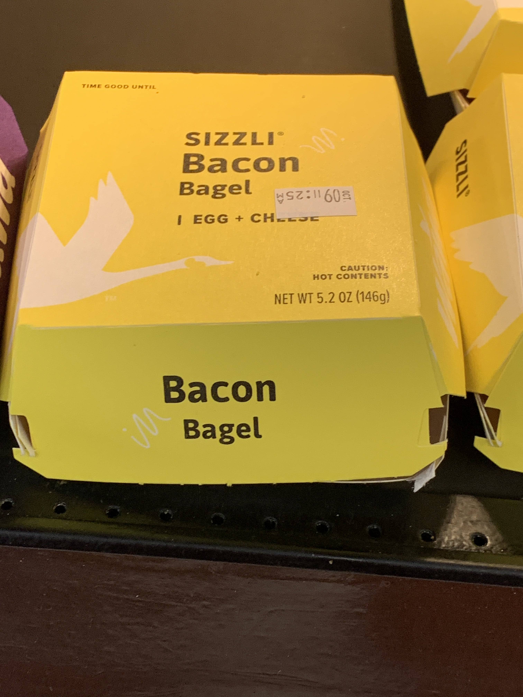
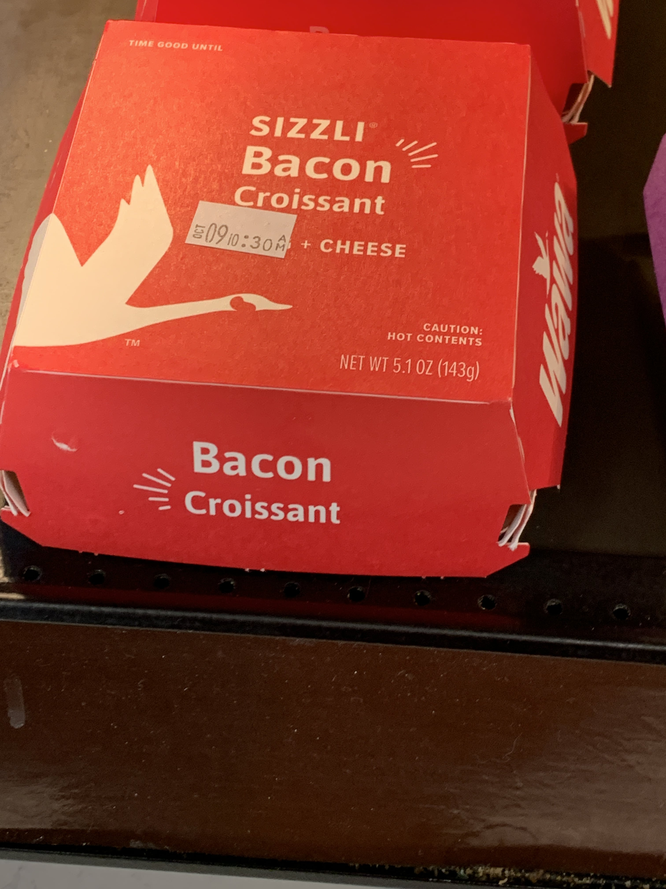

Bacon egg and Cheese on a Bagel
The sandwich is not consistent, the bacon masks the taste. It is very easy to bacon to fall off the sandwhich as the bagel is not good support. However, if at least half of the bacon stays it tastes pretty good
Taste Score:
Health Score:
Price Score:

Bacon Egg and Cheese on a Croissant
Wawa Bacon is just not good at staying on a sandwich. Prepare to eat it seperately. A sandwich with egg and croissant is ok, but the croissant masks the taste. If you like bacon, eat this on a bagel.
Taste Score:
Health Score:
Price Score: